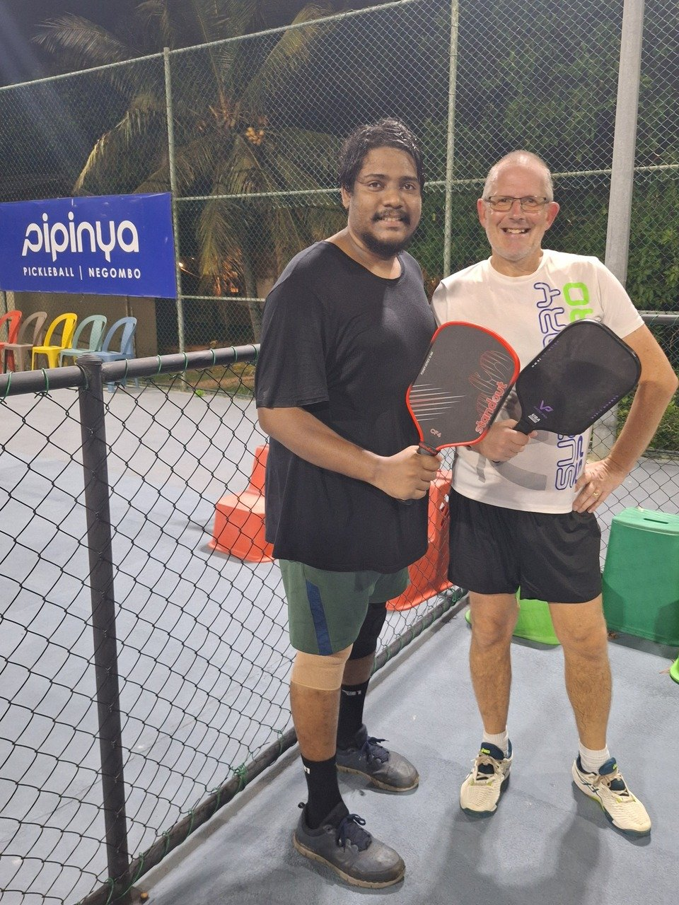

Negombo has one place to play pickleball: Pipinya, with two floodlit outdoor courts on Poruthota Road. We played a mix of private games and open play here in March 2025, against local players and tourists, and fitted in morning drilling sessions too.
Guide checked: October 2026 · Last played: March 2025

Pipinya runs two dedicated outdoor courts with a concrete surface and floodlights. Official hours are 4pm to 10pm, but they let us book the courts in the morning for drilling — worth asking if you want to play before the evening sessions.
We played both private games and open play. The level was generally low and beginner friendly, with a mix of locals and tourists. Courts cost LKR 4,000 an hour (about $13), bookable by phone on 070 661 2227 — split four ways, that's very cheap court time. Pipinya was Sri Lanka's first pickleball club, set up in 2024; it started in Moratuwa, south of Colombo, but as far as we know Negombo is now its only venue.
Our take: proper courts at a good price, and easy to get a game. Don't come expecting strong competition — the standard of play is entry level.
| Court quality | ★★★★☆ |
| Quality of games | ★★★☆☆ |
| Ease of joining | ★★★☆☆ |
| Competitive level | ★★★☆☆ |
| Value | ★★★★★ |
| Wanderers rating | 7/10 |
Would we go back? Yes. The courts are proper pickleball courts with lights for evening play, and the value is excellent. The low standard of play is what holds the score back — it suits beginners and anyone wanting relaxed games or drilling time, less so players looking for competitive matches.
There's no shade on the courts. The 4pm – 10pm sessions avoid the worst of the heat, and the floodlights make evening play easy.
Official hours start at 4pm, but we were able to drill in the mornings. Call ahead on 070 661 2227 to arrange it.
Games are beginner friendly. If you want a harder game, bring a partner and book a private court.
Negombo is the closest town to Colombo's Bandaranaike International Airport, so it's an easy first or last stop on a Sri Lanka trip.
Negombo isn't a competitive destination, but Pipinya gives you proper floodlit courts at LKR 4,000 an hour, with flexibility to drill outside the official hours. It's a good place to keep your game ticking over between flights or beach days. If you're building out a South Asia route, our Goa, Bengaluru and Pune guides are worth comparing against.